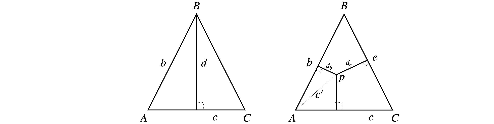

Solutions Q47 - 52
Contents
Solutions Q47 - 52#
# import all python add-ons etc that will be needed later on
%matplotlib inline
import numpy as np
import matplotlib.pyplot as plt
from sympy import *
init_printing() # allows printing of SymPy results in typeset maths format
plt.rcParams.update({'font.size': 16}) # set font size for plots
Q47 answer#
Start by defining vectors in the \(\boldsymbol i-\boldsymbol j\) plane as
Recall that as \(\boldsymbol i \times \;\boldsymbol i = \;\boldsymbol j \times \;\boldsymbol j = 0\) and \(\boldsymbol j \times \;\boldsymbol i = \boldsymbol -k\) the cross product is;
which, as it has components in \(\boldsymbol k\) only, must be perpendicular to \(\vec a\) and \(\vec b\).
In matrix form, the calculation is clearer
Secondly, as \(\vec a\times \vec b=|\vec a||\vec b|\sin(\alpha -\beta)\;\boldsymbol k\) and as the magnitude \(|\vec a| = |\vec b| = 1\) then \(\vec a\times \vec b = \sin(\alpha -\beta)\;\boldsymbol k\). The vector \(\boldsymbol k\) is present because vectors \(\vec a\) and \(\vec b\) are entirely in the \(i-j\) plane and \(\vec a\times \vec b\) is perpendicular to this plane. Comparing the two definitions of \(\vec a\times \vec b\) proves the relationship.
Q48 answer#
By definition, \(\vec A\times\vec B =ab\sin(\chi)\) and similarly for other sides, then
which is the ‘law of sines’.
Figure 76.
Q49 answer#
If you want to do the calculation by hand,the basis set to use is the orthogonal set \((i, j, k)\). The vectors can be defined as \(\vec A = a_1\;\boldsymbol i + a_2\;\boldsymbol j + a_3\;\boldsymbol k\) and a similar equation for \(\vec B\) and \(\vec C\) with coefficients \(b_{1-3},\; c_{1-3}\). Alternatively matrices can be used. In Python/Sympy we need to specify the vectors as one-dimensional matrices. The calculation is simple as dot and cross products are pre-defined.
a1, a2, a3, b1, b2, b3, c1, c2, c3 = symbols('a1, a2, a3, b1, b2, b3, c1, c2, c3', real=True)
A = Matrix( [a1, a2, a3] )
B = Matrix( [b1, b2, b3] )
C = Matrix( [c1, c2, c3] )
f1 = A.cross( B.cross(C) ) # A x( B x C)
f2 = B*(A.dot(C)) # B(A.C)
f3 = C*(A.dot(B)) # C(A.B)
simplify( f1 - f2 + f3 )
Q50 answer#
(a) In this calculation, the line is \(Ap\), and the line \(Bp\) is at an angle \(\theta\) from \(Ap\). Defining the vectors, as in the example in the text, the distance of \(B\) from \(Ap\) can be found as follows using Python to do this numerically, or by hand. The calculation is similar to that in the text.
A = np.array( [1, -2, 3] )
B = np.array( [4, 6, 0] )
p = np.array( [1, 2, 3] )
a = p - A # is a vector length 3
b = p - B
ab = np.cross(a,b)
# print('ab =',ab)
d = np.sqrt( np.dot(ab,ab) )/np.sqrt( np.dot(a,a) )
print('{:s}{:6.3f}'.format('d =',d ) )
d_B_Ap = np.sqrt( np.dot(ab,ab) )/np.sqrt( np.dot(b,b) )
print('{:s}{:6.3f}'.format('dist B to Ap =',d_B_Ap) )
d = 4.243
dist B to Ap = 2.910
Q51 answer#
(a) Let \(r\) be the length of each side. If point A is at the origin, then C is at \((r,0,0)\) and B at \((r/2,r\sqrt{3}/2,0)\) as \(\sin(60^\text{o})=\sqrt{3}/2\). The distance from \(B\) to \(AC\) is \(\displaystyle |\vec d|=\frac{|\vec b \times \vec c|}{|\vec c|}\)

Figure 77. Calculating the length of perpendiculars.
As the length \(|\vec c|=r\) then
and the cross product
and the distance from \(B \to AC\) is therefore \(d=r\sqrt{3}/2\) and by symmetry this is also the length of the other perpendiculars. This could,of course, have been calculated more easily using simple geometry.
(b) To calculate the length \(d_b\),find vector \(\vec c'\) (right hand side of figure 77) and calculated \(\displaystyle d_b=\frac{|\vec b \times \vec c'|}{|\vec b|}\). Let the vector \(\vec c'=\begin{bmatrix}x&y&0\end{bmatrix}\) and because \(A\) is at the origin and \(p\) a point with coordinates \((x,y,0)\) and thus from part (a)
making length \(\displaystyle d_b=\left|(y-x)\frac{\sqrt{3}}{2}\right|\) and the absolute value is used as the length must be positive.
The length \(p\to \vec c\) (line \(AC\)) is \(d_c=y\) by a similar calculation using \((\vec c\times \vec{c'})\). This also is clear from the diagram since \(AC\) lies along the \(x\)-axis. The length \(d_e\) is found by calculating the vector \(\vec{pC}\) and vector \(\vec e\). The result is
giving a length \(\displaystyle d_e = \left|\frac{\sqrt{3}(x-r)}{2} +\frac{y}{2} \right|\). The total distance of all perpendiculars is the sum of the three terms,\(d_c+b_B+d_e\).
To test this with some values Python can be used with the restriction that \((x,y)\) must lie within the triangle, that is when \(x\le r/2,\;y\le x\sqrt{3}/2\) and when \(\displaystyle x\ge \sqrt{3}/2,\; y\le -\frac{\sqrt{3}}{2}(x-r/s)+r\sqrt{3}/4\)
# check on distaces
r = 1
f = lambda x,y : np.abs(y/2-x*np.sqrt(3)/2) + y + np.abs((x - r)*np.sqrt(3)/2 + y/2)
f(1/4,1/8)
and the same answer \(0.866=\sqrt(3)/2\) is obtained for other valid \(x,\;y\) which confirms the value given in the question.
Q52 answer#
Using Python to do the arithmetic, calculate the bond distances first. It is not obvious from the data which O atom to take, so calculate both distances. A simple function ‘length’ is made to calculate the lengths to avoid retyping similar equations.
length = lambda v: np.sqrt(np.dot(v, v))
Fe = np.array([6.591, -16.663, 12.091]) #pdb 1THB. HETATM 1THN3507, HEM C 1
HisN = np.array([7.742, -15.655, 10.429]) # HIS 87 NE2 1THB3086
NA = np.array([7.559, -18.441, 12.096])
NB = np.array([7.832, -16.106, 13.651])
NC = np.array([5.405, -15.044, 12.620])
ND = np.array([5.015, -17.506, 11.076])
Ox1 = np.array([5.558, -17.474, 13.668])
Ox2 = np.array([4.756, -17.191, 14.691])
FeOx1 = Fe - Ox1
FeOx2 = Fe - Ox2
FeHisN= Fe-HisN
print('{:s}{:6.3f}'.format('bond length Fe-Ox1', length(FeOx1)) )
print('{:s}{:6.3f}'.format('bond length Fe-Ox2', length(FeOx2)) )
print('{:s}{:6.3f}'.format('bond length Fe-HisN',length(FeHisN)) )
# calc eqn of plane
NANB = NA - NB
NAND = NA - ND
n = np.cross(NANB,NAND) # n is normal to plane of N atoms A, B, C
X0 = NA # is [NA[o],NA[1],NA[2]] but any point in plane can be used
dn = length(n)
d = np.dot(n,Ox1-X0)/dn # distance Ox1 to plane of N atoms
print('{:s}{:8.3f}'.format('distance Ox1 to plane', d ) )
d = np.dot(n,Ox2-X0)/dn
print('{:s}{:8.3f}'.format('distance Ox2 to plane', d ) )
d = np.dot(n,HisN-X0)/dn
print('{:s}{:8.3f}'.format('distance HisN to plane', d ) )
d = np.dot(n,Fe-X0)/dn
print('{:s}{:8.3f}'.format('distance Fe to plane', d ) )
bond length Fe-Ox1 2.052
bond length Fe-Ox2 3.226
bond length Fe-HisN 2.259
distance Ox1 to plane 1.698
distance Ox2 to plane 2.724
distance HisN to plane -2.607
distance Fe to plane -0.350
# get equation of plane with Sympy
x, y, z = symbols('x, y, z') # use sympy as xyz are symbols
X = Matrix( [x, y, z] )
X0= Matrix( [NA[0], NA[1], NA[2]] ) # any point in plane
plane= np.dot(n,X - X0) # n is defined above
print(plane)
[-3.83562499999999*x - 3.67746*y + 6.19549499999999*z - 113.763258005]
From these results, the oxygen atom Ox1 is clearly attached to the Fe atom, which is \(0.35\) angstrom out of the plane of the three porphyrin atoms. Because the Fe-Ox1 distance is larger than the plane to OX1 distance, the Fe atom is out of the plane on the side towards the Histidine group, not the oxygen; this is clear from the sign of the distances also.
Fe-O distances in inorganic molecules are in the range \(1.9 \to 2.1\) and Fe-N \(1.95 \to 1.99\) Angstrom.
Exercise: Find an X-ray structure of deoxygenated haemoglobin in the PDB, and compare the Fe-O and FeN(His) distances with those calculated in this problem.